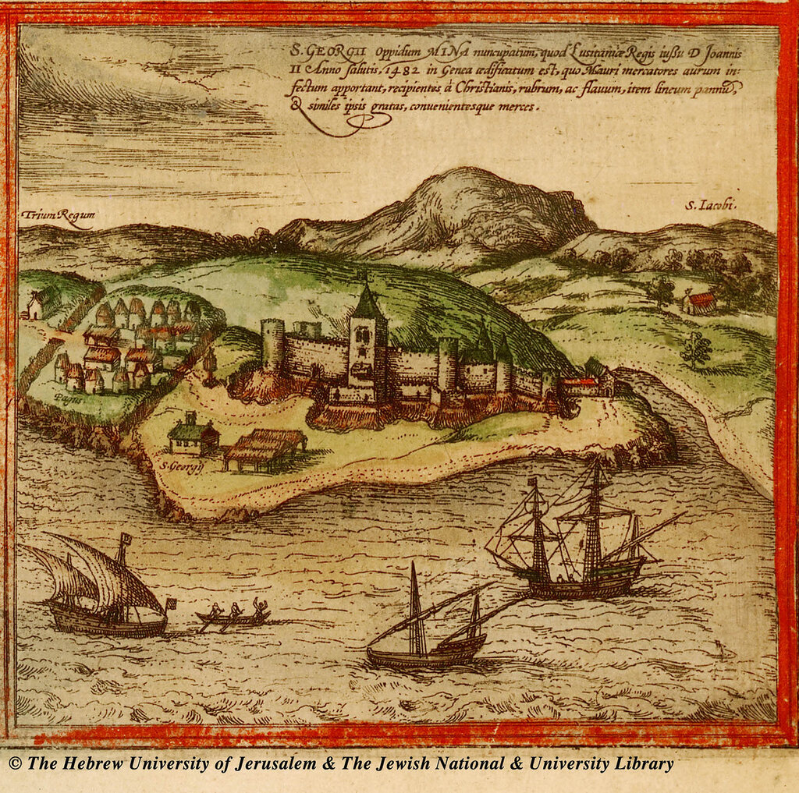
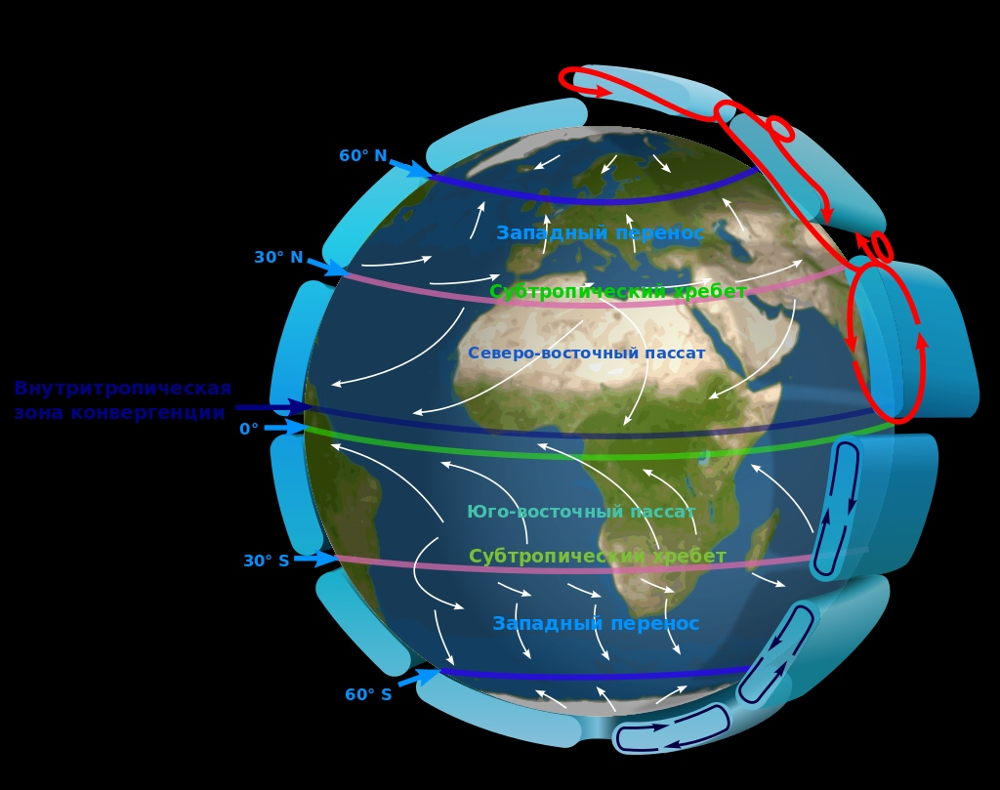
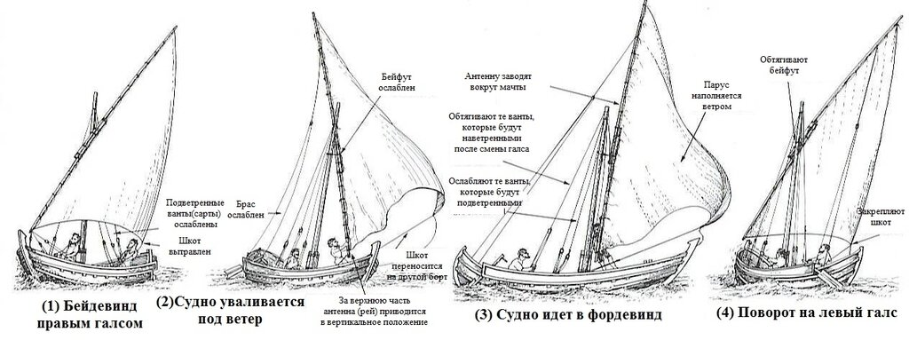
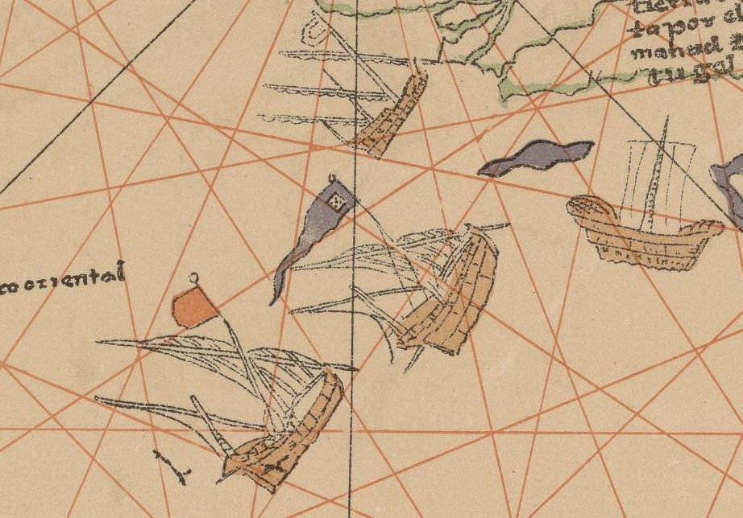
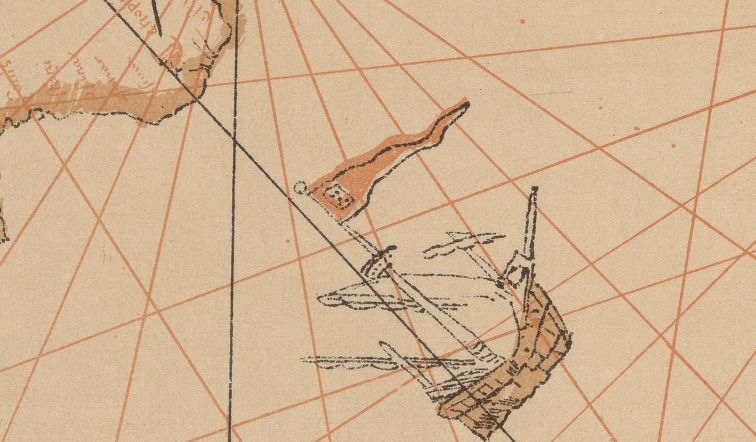
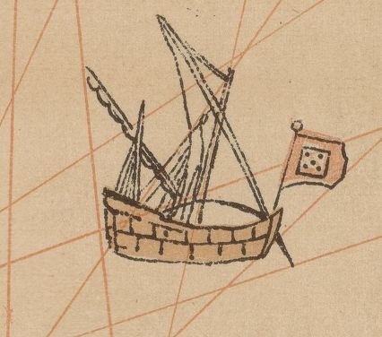
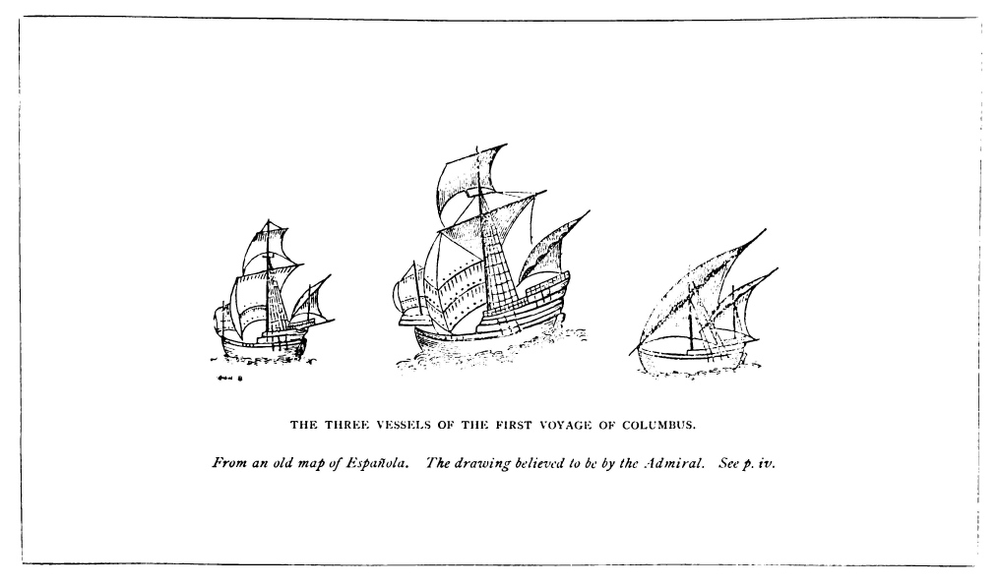

Изображения на картах
Встают леса мечты в причудливом убранстве,
Давно забытые доходят голоса,
Плывут обрывки снов, и ветер дальних странствий
Соленой свежестью нам полнит паруса.
Вс. Рождественский. «Нам снятся до сих пор нездешние закаты...»
Среди всех кораблей первой половины XV века каравелла занимает золотую середину; любители красивых исторических параллелей считают, что ей отводилось то же место, которое в эпоху расцвета парусного флота стал занимать фрегат.

Две каравеллы и нао на рейде Эльмины (нынешняя Гана). (Braun and Hogenberg, Civitates Orbis Terrarum I, 54.
Почему та каравелла, о заслугах которой в эпоху Великих географических открытий мы знаем, появилась именно в XV веке? Ответ несложен: спрос диктует предложение. Именно тогда возникла потребность в корабле, который помог бы искателям новых путей в океане преодолеть зону юго-восточных пассатов, а при возвращении домой преодолеть встречные северо-восточные пассаты, имел бы достаточную автономность для длительного путешествия и небольшую осадку, дающую возможность близко подходить к исследуемым берегам.

Хочу еще раз привлечь внимание к тому обстоятельству, что корабль под названием каравелла появился за пару веков до первых путешествий вдоль западного берега Африки. Однако лишь в начале XV века он приобрел те черты, которые сделали его символом дальних морских плаваний европейцев. Именно после того события 1440 , которое Зурара описывает в Хронике (см. выше) корабль, который называли каравелла, стал непременным гостем во всех документах и хрониках эпохи, так или иначе связанных с дальними океанскими походами. В португальских хрониках за ним закрепилось название caravelas dos descobrimentos – корабль для открытия новых земель. И в это же самое время из всех документов, связанных с дальними путешествиями, почти исчезают упоминания такого типа судов, как барка (barcha) и значительно сокращаются ссылки на более крупный корабль – barinel, которыми начиналась эпоха Великих географических открытий.
Отвлечемся немного от текста, чтобы взглянуть на схему движения судна с латинским парусом против ветра. Схема эта приведена у морского историка Дж. Прайора, я только добавил к ней пояснения на русском языке.

Конечно, приведенная процедура сложнее, чем переход на другой галс судна с прямым парусным вооружением, но она позволяла идти значительно круче к ветру, чем, скажем, при лавировании на барке, а, значит, латинский парус оказался лучше прямого для преодоления зоны встречных пассатов.
Каравелла имела и другие отличия от существовавших ранее судов. Наклонный форштевень и невысокая кормовая надстройка, как правило одноярусная, отличала ее от грузных кораблей североевропейской традиции. Меньшая площадь надводного борта каравеллы существенно снижала дрейф судна от бокового ветра и тем самым облегчала маневрирование в прибрежной зоне.
Но не следует, видимо, считать, что все каравеллы выглядели одинаково, имели стандартные характеристики. Это были весьма разнообразные суда как по конструкции корпуса, так и по особенностям рангоута и такелажа.
Очевидно, на первом этапе своего развития каравелла имела две мачты с латинскими парусами, т.е. повторяла парусное вооружение галер той эпохи. Несомненно, учитывая плохие характеристики таких кораблей при сильном попутном ветре, для хода в фордевинд ставили маленький прямой парус, подобный парусу tréou, который использовался для галер (о нем смотри здесь).
Существенным недостатком каравелл в длительных плаваниях была их небольшая грузоподъемность. Бартоломеу Диаш, вернувшийся в 1488 году на родину после открытия мыса Доброй Надежды, рекомендовал включать в отряды для исследования новых земель по меньшей мере одно грузовое судно для размещения на нем необходимых припасов. К этой рекомендации, возможно, прислушался Колумб, отряд которого состоял из двух каравелл и одного более крупного нао. Подобный же состав отряда изображен на гравюре из альбома Брауна и Хогенберга Civitates Orbis Terrarum, приведенной в начале поста.
Объединения кораблей с латинским парусным вооружением, как правило каравелл, с более крупными судами с прямыми парусами характерны и для старейшей дошедшей до нас карты, показывающей открытия Колумба. Считается, что она исполнена Хуаном де ла Коса, командиром «Санта Марии», одним из самых опытных мореплавателей своего времени. Карта датируется 1500 годом, хранится она в Военно-морском музее Мадрида (Museo Naval de Madrid). Подробнее об этой карте мы поговорим, если приведется, когда будем рассматривать навигационное обеспечение дальних плаваний в XV веке.
На карте де ла Коса изображено двенадцать кораблей. Два из них – одномачтовые суда с одним прямым парусом, похожие на корабли с оттисков печатей североевропейских городов. Они размещены у берегов Северной Европы и около баскского побережья. Один корабль – с полным прямым парусным вооружением с высокой кормовой надстройкой. Все остальные – это каравеллы с их характерным низким профилем. Там есть и двухмачтовые и трехмачтовые корабли. Есть каравелла с одним прямым парусом на фок-мачте и двумя латинскими – на двух остальных. Есть трехмачтовые каравеллы, оснащенные только латинскими парусами. Мы подробно проанализируем эти изображения в ходе нашего дальнейшего рассказа, а сейчас просто приведем несколько из них.



Кстати, завершая тему о ранних изображениях каравелл, приведу еще одну картинку, автором которой считают самого Христофора Колумба, который, якобы, изобразил три корабля своей экспедиции.
